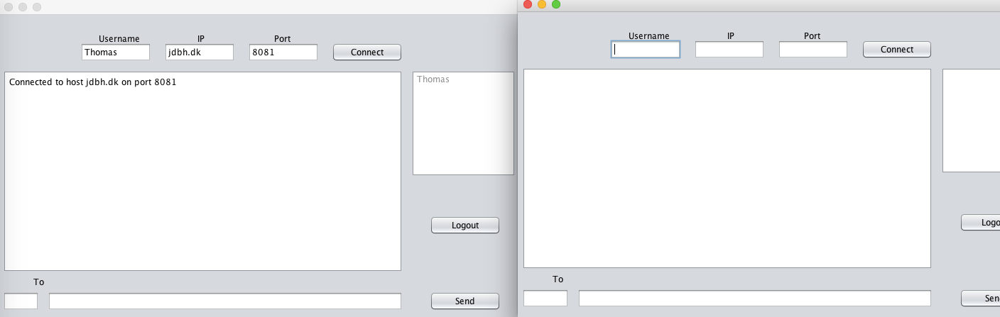
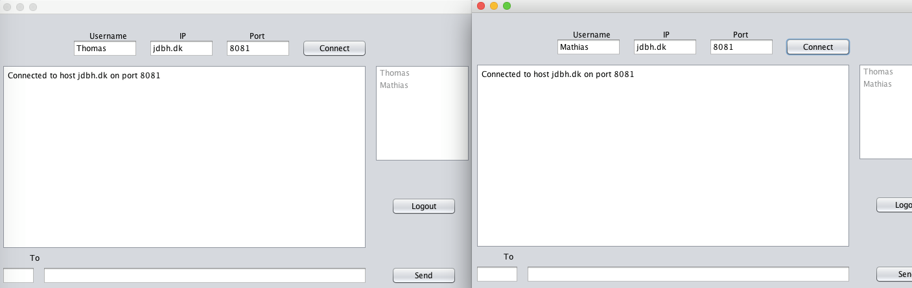
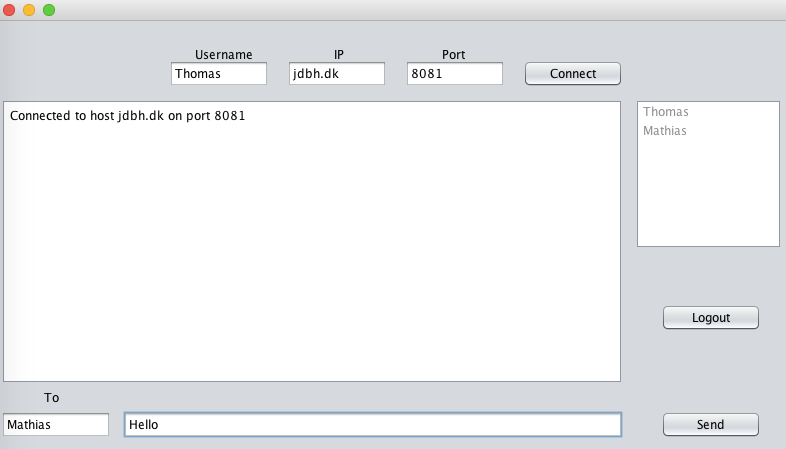
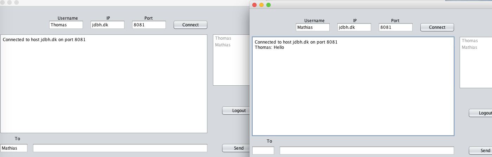
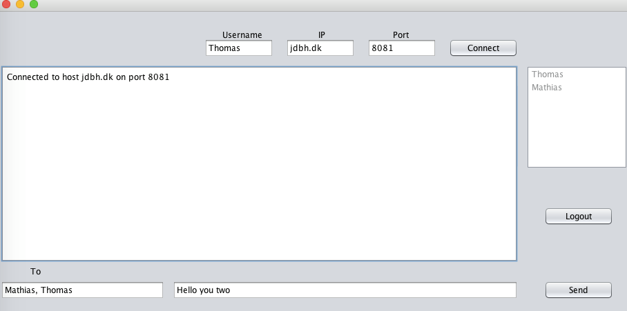
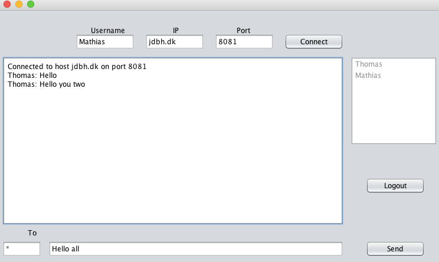
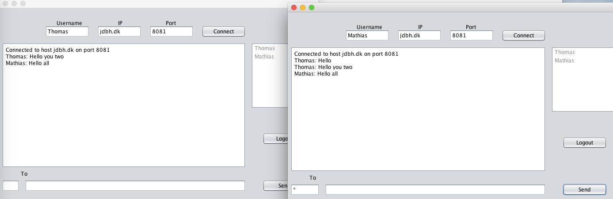
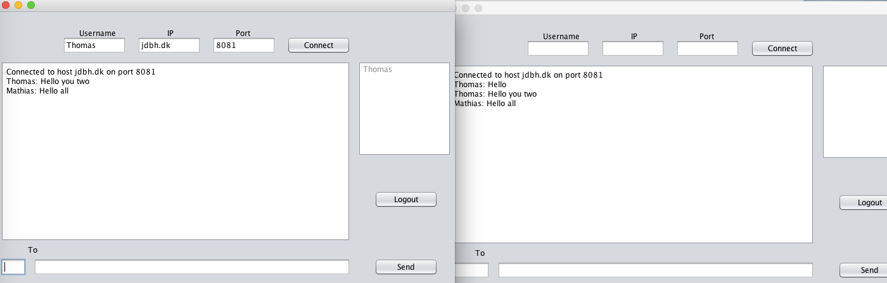

We followed the suggested two-day mini sprint agenda, and first started with a Maven Web Application, that we later realized wouldn't work because we needed a GUI made in Swing. For that purpose we copied our project to a new Maven Java Application and also started a new GitHub repository, hence the lack of commits and contributions to the repository. Each day we met and worked together discussing and coding along on the same computer, because we could not really see a feasible solution to splitting up the different tasks that needed to be done.
The system is composed of a Server class that listens on port 8081 for incoming connections. When it receives one, it instantiates a new instance of the class ClientHandler, that has a reference to the socket of the newly connected client and the server itself. Once a user telnets in or launches the GUI, an instance of the Client class is created, which listens for messages from the server. For it to update the GUI, we have used a compositional relationship between the GUI class and the Client class. Handling of the messages is done by two utility classes; messages from the client is handled by the ClientMessageHandler, and messages from the server is handled by the ServerMessageHandler.
Double click on the JAR file to open a GUI window. The first step is then to file out the 3 top fields with your username, the IP and Port to connect to server, when it is done click "Connect". On the right side of the window you can see the list of usernames of connected users. This list gets updated every time any user logs in or logs out. The bottom part of the window is used when sending a message. In the bottom left field we set the recipient list, using the usernames. We can add one recipient "UserA", several recipients "UserA, UserB" or all users using the "*" sign. The field next to recipient is the text message field, click on "Send" when recipients and message fields are complete. To logout simply click the "Logout" button on the right part of the window.
We used DAT group 13 server, hosted in jdbh.dk port:8081
We login with the first Client "Thomas". On our client side, we decided to gather the Connect and LOGIN action as one. When we click "Connect" both these actions are performed.
As we can see, this operation succeeded, "Thomas" is added to the connected users list on the right window (where we display the CLIENTLIST: part of the protocole).
We repeat the first operation with a second user "Mathias".
Now both users are connected and appear in the connected users list.
On Thomas' GUI we add "Mathias" in the "To" field and "Hello" in the text field and press "Send".
 Mathias received correctly the message with the format "Sender : Message". On Mathias' GUI we can see that the message was correctly displayed as "Thomas : Hello"
On Thomas' GUI we repeat the send message operation, this time we add "Mathias, Thomas" to the recipients.
We can see that both users received the message with the correct "Sender : Message" format.
This time Mathias sends the message "Hello all" to all connected users. We thus use the command "*" in the recipients field.
 We can see that both "Thomas" and "Mathias" (the only two connected users) receive the message correctly.
Mathias clicks the button "Logout", this triggers the "LOGOUT:" part of the protocole.
We can see that on "Thomas" window, the client list is now updated, and only "Thomas" appears in the list of connected Clients